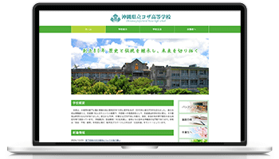
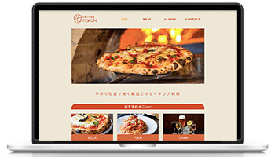
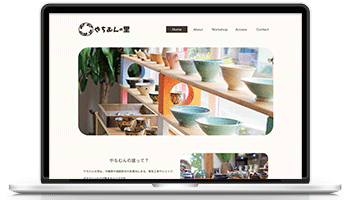

Works
--- site1 ---
高校サイト
| タイトル | ・沖縄県立コザ高等学校 |
|---|---|
| 目的 | ・コザ高校の学校紹介 |
| ターゲットユーザー | ・高校生及びその父兄 ・入学対象者、卒業生 |
| サイトコンセプト | ・コンテンツページを3ページに抑え、利用者が使いやすい構成とする。 ・パンフレットやお知らせのバナーを載せ、求めている情報へアクセスしやすくする。 |
| デザインコンセプト | ・学校カラーの緑をメインに、背景カラーは白でシンプルに見やすくする。 ・コンテンツページのタイトルを大きく載せ、何のページなのかを分かりやすくする。 |
--- site2 ---
石窯ピザ酒場まるき
| タイトル | ・石窯ピザ酒場まるき |
|---|---|
| 目的 | ・店舗情報やメニューの掲載 |
| ターゲットユーザー | ・20~40代の女性、同年代カップル、グループ |
| サイトコンセプト | ・トップページの画像からメニューへ飛べるようリンクを設置。 ・メニューと共に値段を掲載し、利用した時の価格帯が分かるようにする。 |
| デザインコンセプト | ・飲食店なので、明るい暖色系で統一し温かみと安心感を演出。 |
--- site3 ---
やちむんの里
| タイトル | ・やちむんの里 |
|---|---|
| 目的 | ・やちむんの里の施設紹介 |
| ターゲットユーザー | ・やちむんに興味を持つ20代以降の女性、観光客 |
| サイトコンセプト | ・窯ややちむんの画像を複数配置し、やちむんに詳しくない方にも施設の雰囲気をイメージしやすいようにする |
| デザインコンセプト | ・背景色は白系の淡い色で見やすく、メインカラーはやちむんの土色を意識してブラウン系にする。 ・伝統工芸品の堅苦しさを抑えるため曲線を多く使用し柔らかい雰囲気にする。 |